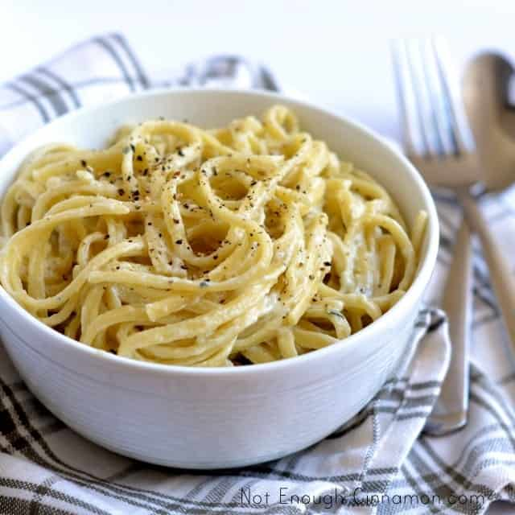

Home
Blue Cheese Pasta

Description
This easy Blue Cheese Pasta recipe uses only a handful of ingredients and comes together in a snap. The perfect comfort food for a cold winter day to share with family and friends.
Ingredients
- 1/2 pound spaghetti
- 2 tablespoons unsalted butter
- 1/3 pound blue cheese, crumbled
- 1/4 cup fresh parsley, finely chopped
- Kosher salt, to taste
Steps
- Gather the ingredients
- Bring a pot of salted water to a boil and cook pasta according to package directions. Reserve 1/2 cup of the pasta water, then drain the noodles.
- Turn the heat down to low and add the butter to the pot.
- When the butter has melted, add the noodles back to the pot and stir to coat.
- Slowly add the blue cheese, stirring the noodles so the cheese melts.
- As you add the cheese, also drizzle a little of the reserved pasta water over the noodles, using as much or as little as needed. The water will keep the noodles from clumping together and thin out the blue cheese as it melts so the sauce has a lighter, less-sticky texture.
- Once the blue cheese has mostly melted, stir in the parsley. Add salt to taste.
- Serve immediately and enjoy!